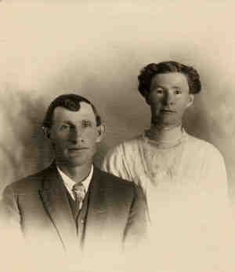

 Albert M. WEST (Abt 1881-1963) |
Albert M. WEST 172
Noted events in his life were: • Census, 23 Jan 1920, Tula Lake Twp., Modoc Co., California, USA. 3719 • Census, 14 Apr 1930, Visalia, Tulare Co., California, USA. 3216 • Occupation: fruit farmer, 14 Apr 1930, Visalia, Tulare Co., California, USA. 3216 Albert married Ruby Elkin AYRES, daughter of Jeremiah AYRES and Margaret Eliza DOUTHITT, on 17 Apr 1914 in , Klamath Co., Oregon, USA 3350.,3351 (Ruby Elkin AYRES was born on 17 Apr 1882 in College Hill, Madison Co., Kentucky, USA 3351,3717, christened on 2 Sep 1882 in College Hill, Madison Co., Kentucky, USA 3718 and died on 23 Aug 1923 3350,3351,3354.) Albert next married Ann. (Ann died in Fresno, Fresno Co., California, USA 3215.) |
|
only search Stockdale Coddington Genealogy |
Table of Contents | Surnames | Name List
This website was created 2 Apr 2025 with Legacy 10.0, a division of MyHeritage.com; content copyrighted and maintained by coddgenealogy at gmail d0t com